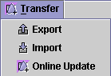
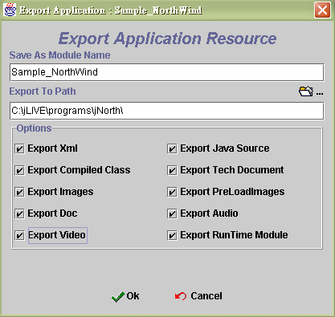
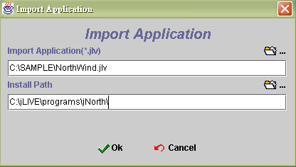
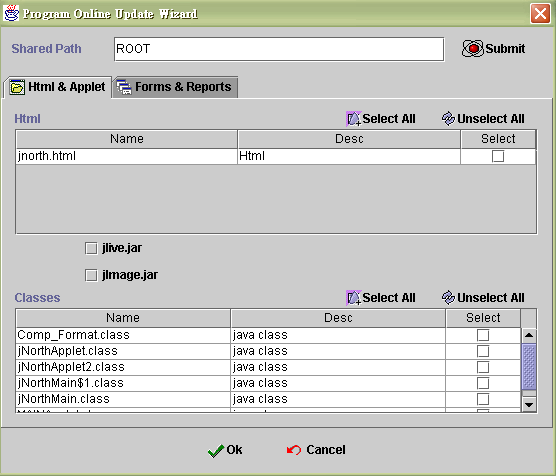
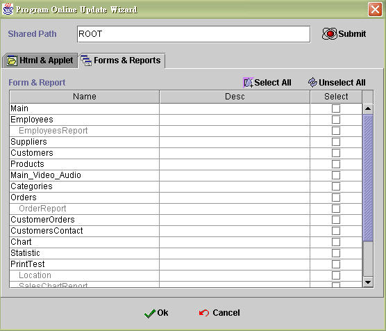
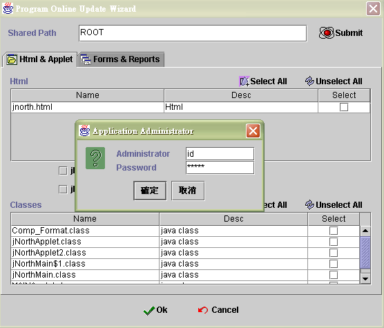

|
|
|
Transfer is made use of application deployment and preserve. Export and import are aimed at the *.jlv file and this kind of file is identify by Probe company. It collect all information of the application into one jlv file. But the online update is in connection with update the application source in AP server. Provided that we update the class files and then all clients who connect to the AP server will be update.

The capability of export is to export application resource. You can choose what you need to export.
Save as module name : You have to give a name of export file.
Export path : Give one path and the exported file will locate in the directory.
Option :
Export Xml : The Xml files will be export. The location is inside main application directory named " xml ".
Export java source : The java source files will be export. The location is inside main application directory named " source ".
Export compiled class : The compiled class files will be export. The location is inside main application directory named " class ".
Export tech document : The tech document files will be export. The location is inside main application directory named " doc ".
Export images : The images files will be export. The location is inside main application directory path " \class\images ".
Export preloadimages : The preloadimages files will be export. The location is inside main application directory path " \class\preloadimage ".
Export doc : The doc files will be export. The location is inside main application directory path " \class\doc ".
Export audio : The audio files will be export. The location is inside main application directory path " \class\audio ".
Export video : The video files will be export. The location is inside main application directory path " \class\video ".
Export runtime module : The runtime module files will be export. The location is inside main application directory. They are *.html and *.jar files. The "*" is the application name.

Import application from one jlv file then whole application will be create into system.
Import application : Choose one *.jlv in existence.
Install path : Choose the install path to deployment the application.

When the application has already deployment, it might be modify in testing status. And we can use online update to update all files without take any disk to AP server or shot down AP server. What you need is one connection to AP server and the server needs sharing the directory where the application locate. For example, " ROOT " is the shared path.
Shared path : AP server shares the directory where the application locate.
Html & Applet :
Html : This part will show html file. If you need to update the file, just select the check box. If the application is first time to deployment into AP server, it should be chosen. Or you build the program again and html has been changed, it also needs to update.
jlive.jar : jlive.jar is probe interpreter. It include jLive Builder system class. If you check this one, jlive.jar will be update by the jar file inside the design environment. Only you update jLIVE Builder design mode and re-complier application, it will be necessary.
jimage.jar : When your image files have been change, It will be necessary to update. The jimage.jar is to compress the images in the directory of preloadimage and images under " \{application location}\class ".
Classes : In this area, classes mean non-form and non-report classes. Usually we can find applet class inside. Or other class could be useless.

Forms & Reports : We can see all forms and report classes in this area. In the same way, only select the check box to make sure which forms or reports you want to update. When you click " select all " button or " unselect all " button, it will select all or unselect all forms and reports class.

Submit : Because online update is design for project leader to deployment application. Therefore submit the update process must have AP server manager ID and password. When the file choose done, you need to click submit button to execute update. It will show one login in message box. Please input ID and password. Then update process will be execute.

|
|
|
|
Copyright © 2001~ 2004 Probe.com.tw . All Rights Reserved.
Questions, comments, and suggestions to Service@probe.com.tw